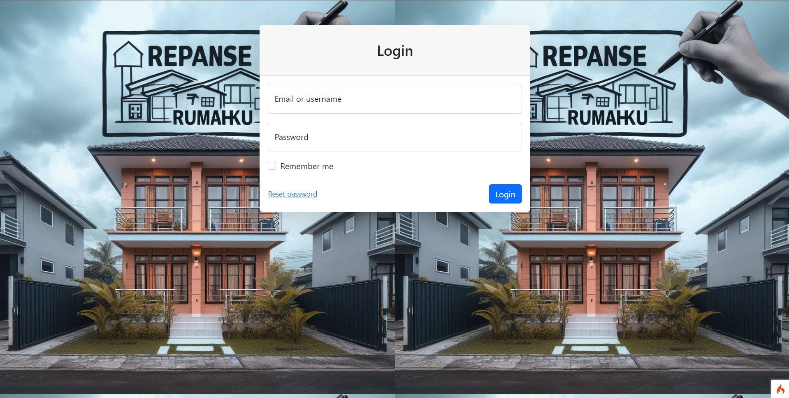
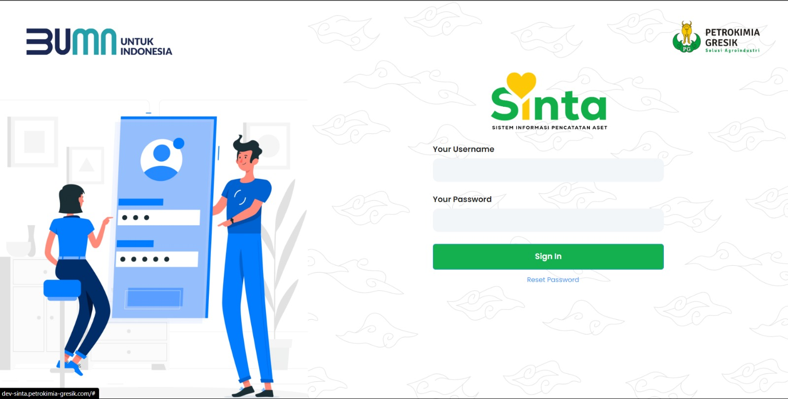

Wisnu Ardiansyah
Solusi Desain & Teknik untuk Operasional.
Lulusan D-III Teknologi Informasi berpengalaman membangun sistem internal dan antarmuka aplikasi berbasis web.

Rumahku.id

Sinta - Sistem Inventaris Barang
Ruang lingkup keahlian dan kompetensi teknis
Keahlian Utama
Web Development
Pengembangan aplikasi web secara menyeluruh, mulai dari perancangan antarmuka, implementasi logika sistem, hingga pengelolaan database, dengan pendekatan terstruktur dan sesuai kebutuhan pengguna.
Administrasi & Operasional Sistem
Pengelolaan data operasional, dokumentasi sistem, serta dukungan administrasi berbasis aplikasi untuk memastikan proses kerja berjalan tertib, akurat, dan terdokumentasi dengan baik.
Keamanan Data
Implementasi keamanan data melalui enkripsi file dan pengelolaan akses sistem untuk melindungi informasi penting perusahaan dari risiko kebocoran dan penyalahgunaan data.
Microsoft Office & Tools Pendukung
Penggunaan Microsoft Word, Excel, dan PowerPoint untuk pengolahan data, pembuatan laporan, dokumentasi teknis, serta presentasi yang mendukung kegiatan operasional dan pelaporan manajemen.
Jaringan Komputer
Kompeten dalam konsep dan implementasi jaringan komputer, meliputi konfigurasi jaringan lokal (LAN), pengalamatan IP, troubleshooting konektivitas, serta pemahaman dasar perangkat jaringan untuk mendukung operasional sistem dan infrastruktur TI.
Cloud Computing
Pemahaman dasar konsep cloud computing, mencakup layanan komputasi, penyimpanan, dan jaringan berbasis cloud, serta penerapannya untuk mendukung ketersediaan dan skalabilitas sistem aplikasi.